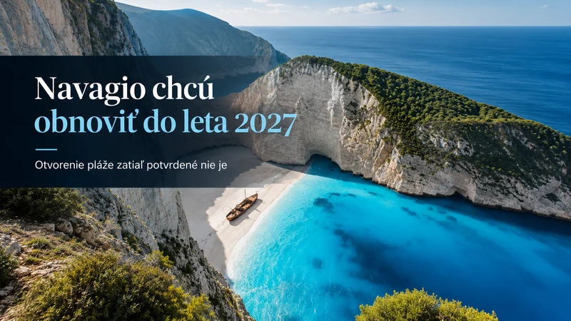
Grécko · Zakynthos · aktuálne informácie
Navagio chcú obnoviť do leta 2027. Otvorenie slávnej pláže však zatiaľ potvrdené nie je
Leto 2027 je cieľom dokončenia plánovaných prác. O otvorení pláže rozhodnú až bezpečnostné posudky.
Čítať článok
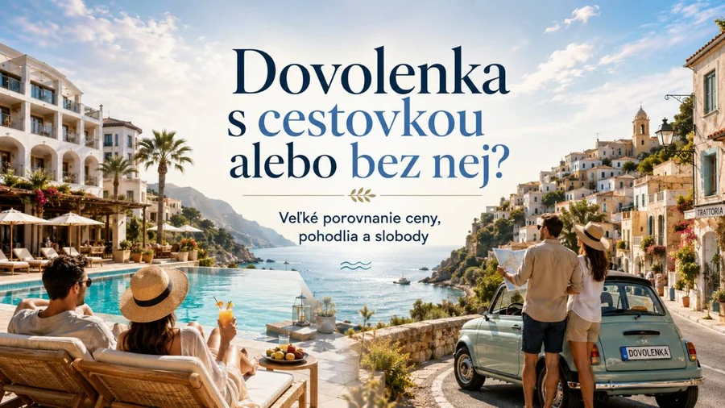
Praktické cestovanie · cena · sloboda
Dovolenka s cestovkou alebo bez nej? Veľké porovnanie ceny, pohodlia a slobody
Porovnanie ceny, pohodlia a slobody pri dovolenke s cestovkou,
bez cestovky, s all inclusive aj mimo hlavnej sezóny.
Čítať článok
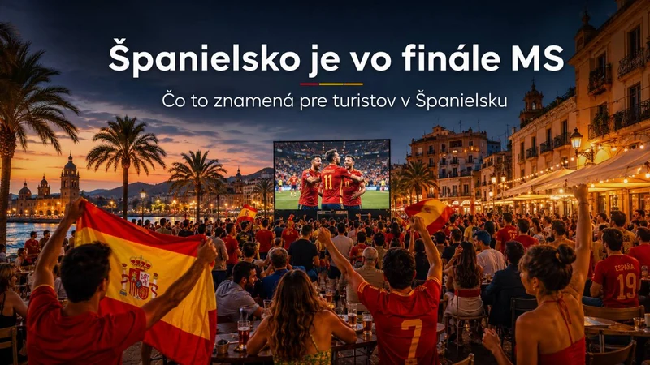
Španielsko · futbal · praktické cestovanie
Španielsko je vo finále MS: kde zažiť futbalovú noc
Praktický sprievodca: veľké obrazovky, bary, doprava, horúčavy a krátky pobyt pri mori.
Čítať článok
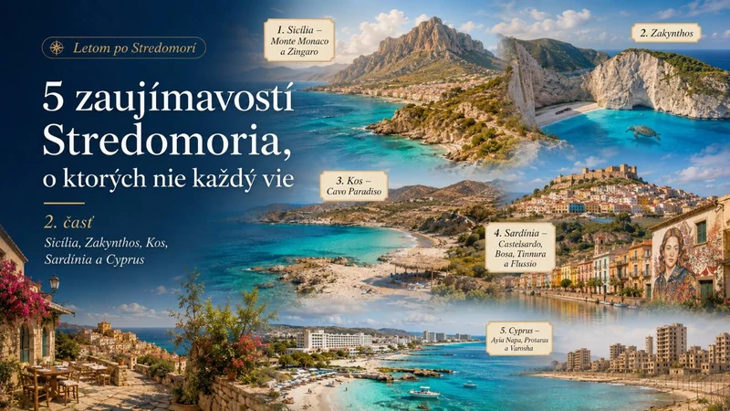
Seriál · Stredomorie · 2. časť
5 zaujímavostí Stredomoria, o ktorých nie každý vie: 2. časť
Zingaro, korytnačie pláže Zakynthosu, divoký Kos, sardínske dediny
a Varosha v druhej časti cestovateľského seriálu.
Čítať článok
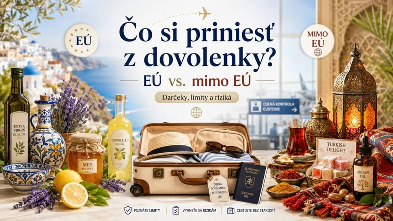
Praktické rady · colnica · suveníry
Čo si môžete priniesť z dovolenky v EÚ a mimo EÚ
Darčeky, colné limity, potraviny a rizikové suveníry v jednom
praktickom sprievodcovi pre cestovateľov.
Čítať článok
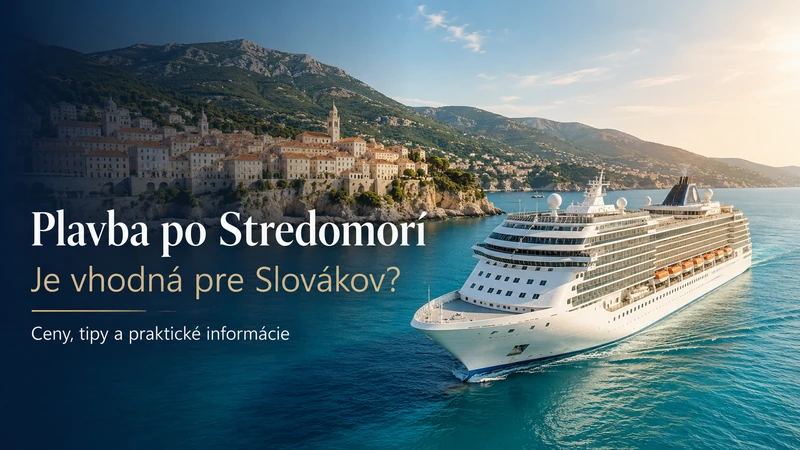
Plavby · Stredomorie · sprievodca
Je plavba výletnou loďou po Stredomorí vhodná pre Slovákov?
Kompletný sprievodca pre Slovákov: ceny, doprava do prístavu,
kajuty, strava, výlety aj skryté poplatky.
Čítať článok
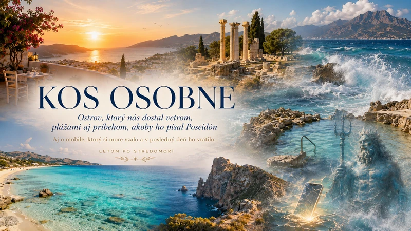
Grécko · Kos · osobná skúsenosť
Kos osobne: vietor, Poseidónov mobil a pláže
Osobná skúsenosť z Kosu z roku 2025: vietor, výlety autom, horúce
pramene, západné pláže a príbeh s mobilom, ktorý vrátilo more.
Čítať článok
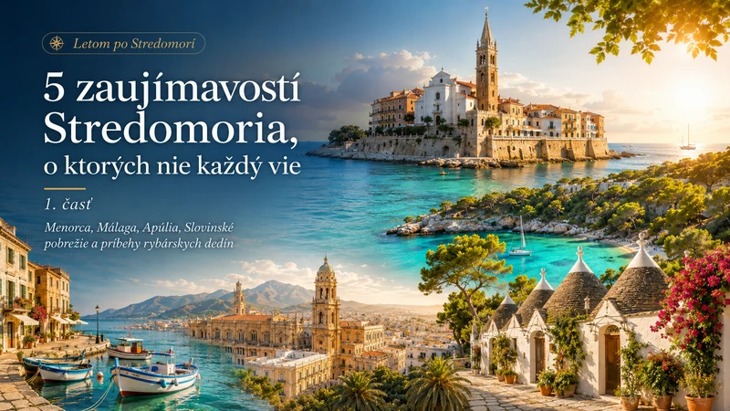
Seriál · Stredomorie · 1. časť
5 zaujímavostí Stredomoria, o ktorých nie každý vie
Rybárske dediny, slovinské pobrežie, Menorca, Málaga a trulli
v Apúlii v prvej časti nového cestovateľského seriálu.
Čítať článok
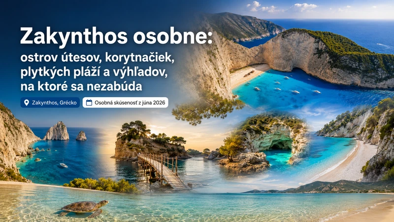
Grécko · Zakynthos · osobná skúsenosť
Zakynthos osobne: útesy, korytnačky a výhľady
Osobná skúsenosť zo Zakynthosu: Laganas, Navagio, Myzithres,
Xigia, Dafni, Banana Beach, korytnačky a praktické rady.
Čítať článok
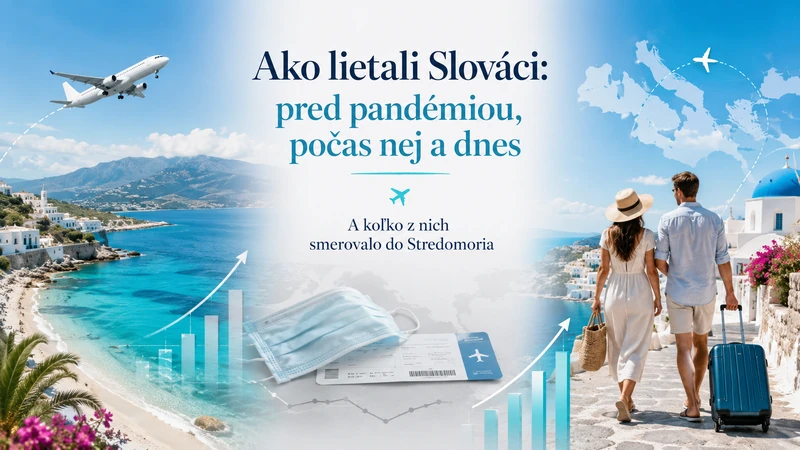
Cestovanie · štatistiky · Stredomorie
Slováci po pandémii opäť lietajú viac
Koľko Slovákov lietalo pred pandémiou, počas covidu a dnes –
a aký podiel môže smerovať do Stredomoria.
Čítať článok
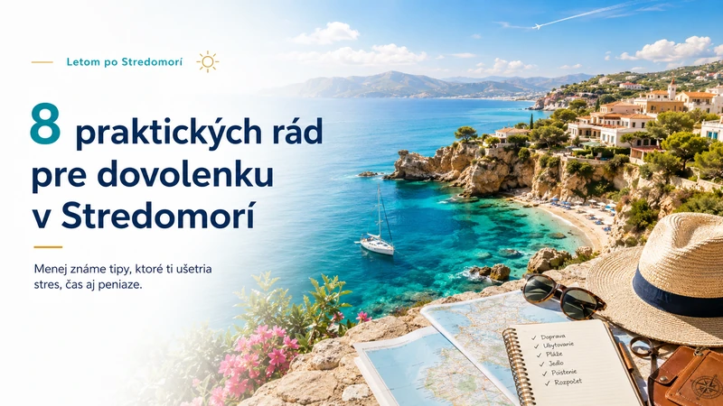
Praktické rady · celé Stredomorie
8 praktických rád pre dovolenku v Stredomorí
Menej známe tipy, ktoré ti môžu ušetriť stres, čas aj peniaze
pri výbere hotela, pláže, termínu aj plánovaní programu.
Čítať článok
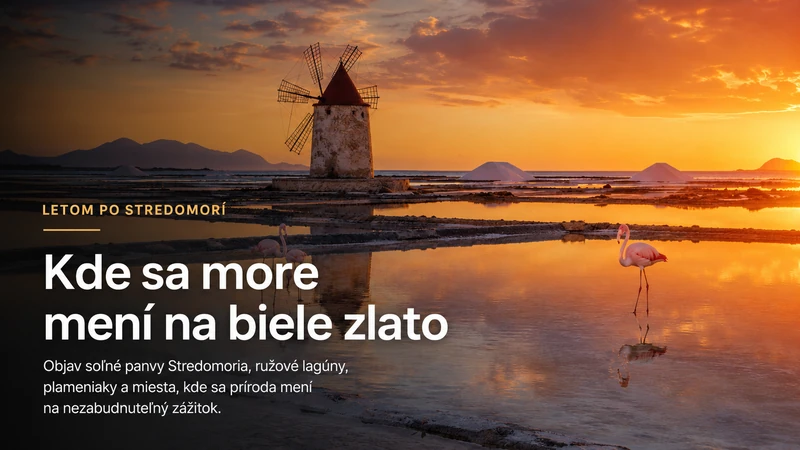
Príroda Stredomoria · Taliansko · Cyprus · Francúzsko · Malta · Chorvátsko
Kde sa more mení na biele zlato
Objav soľné panvy Stredomoria, ružové lagúny, plameniaky a
miesta, kde sa príroda mení na nezabudnuteľný zážitok.
Čítať článok
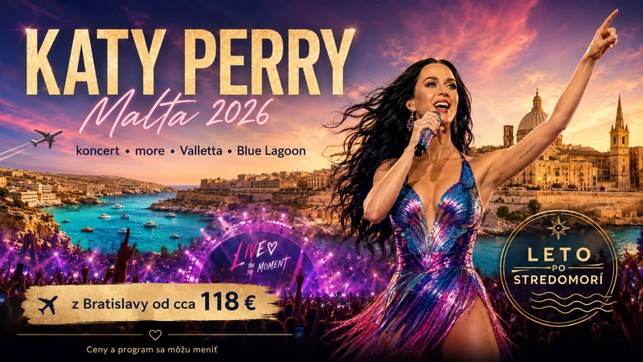
Malta · leto · koncerty
Malta v júli: koncerty, more a horúčavy
Priama linka z Bratislavy, Isle of MTV, Valletta, Comino a
praktické tipy na júlové horúčavy.
Čítať článok
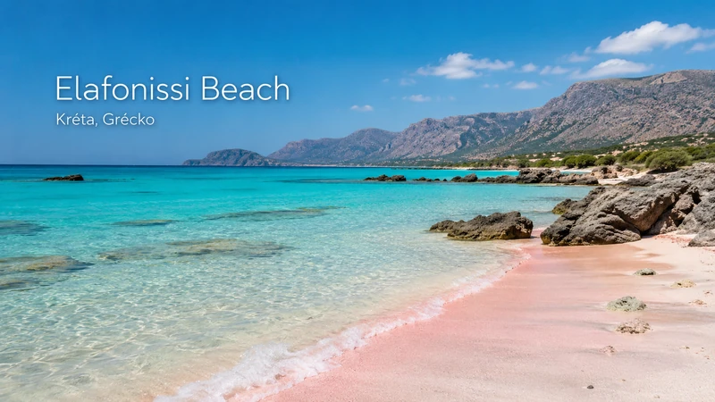
AI prieskum · Pláže Stredomoria v EÚ
5 najlepšie hodnotených pláží Stredomoria v EÚ
Pozri si výber piatich výnimočných pláží v Stredomorí:
Elafonissi, Balos, La Pelosa, Falassarna a Playa de Muro.
Čítať článok
Taliansko · Amalfské pobrežie
Od Neapola po Salerno: ako si naplánovať Amalfské pobrežie bez stresu
Praktický sprievodca dopravou, bývaním, trajektmi, Ravellom,
Cestou bohov a jednoduchým itinerárom na 3 dni.
Čítať článok